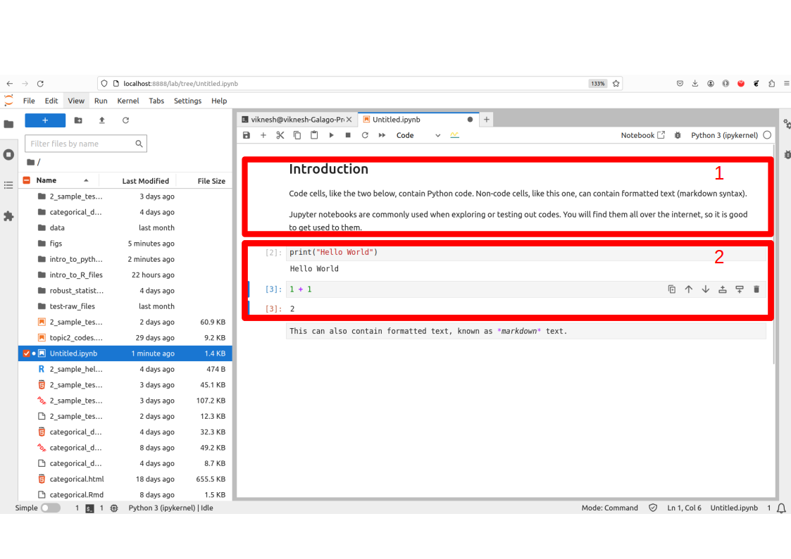
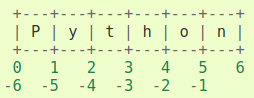

The Zen of Python, by Tim Peters
Beautiful is better than ugly.
Explicit is better than implicit.
Simple is better than complex.
Complex is better than complicated.
Flat is better than nested.
Sparse is better than dense.
Readability counts.
Special cases aren't special enough to break the rules.
Although practicality beats purity.
Errors should never pass silently.
Unless explicitly silenced.
In the face of ambiguity, refuse the temptation to guess.
There should be one-- and preferably only one --obvious way to do it.
Although that way may not be obvious at first unless you're Dutch.
Now is better than never.
Although never is often better than *right* now.
If the implementation is hard to explain, it's a bad idea.
If the implementation is easy to explain, it may be a good idea.
Namespaces are one honking great idea -- let's do more of those!1 Introduction to Python
1.1 Introduction
Python is a general-purpose programming language. It is a higher-level language than C, C++ and Java in the sense that a Python program does not have to be compiled before execution.
It was originally conceived back in the 1980s by Guido van Rossum at Centrum Wiskunde & Informatica (CWI) in the Netherlands. The language is named after a BBC TV show (Guido’s favorite program) “Monty Python’s Flying Circus”.
Python reached version 1.0 in January 1994. Python 2.0 was released on October 16, 2000. Python 3.0, which is backwards-incompatible with earlier versions, was released on 3 December 2008.
Python is a very flexible language; it is simple to learn yet is fast enough to be used in production. Over the past ten years, more and more comprehensive data science toolkits (e.g. scikit-learn, NTLK, tensorflow, keras) have been written in Python and are now the standard frameworks for those models.
Python is an open-source software. It is free to use and extend.
1.2 Installing Python and Jupyter Lab
To install Python, navigate to the official Python download page to obtain the appropriate installer for your operating system.
Important
For our class, please ensure that you are using Python 3.10.12.
The next step is to create a virtual environment for this course. Virtual environments are specific to Python. They allow you to retain multiple versions of Python, and of packages, on the same computer. Go through the videos on Canvas relevant to your operating system to create a virtual environment and install Jupyter Lab on your machine.
Jupyter notebooks are great for interactive work with Python, but more advanced users may prefer a full-fledged IDE. If you are an advanced user, and are comfortable with an IDE of your own choice (e.g. Spyder or VSCode), feel free to continue using that to run the codes for this course.
Important
Even if you are using Anaconda/Spyder/VSCode, you still need to create a virtual environment.
Jupyter notebooks consist of cells, which can be of three main types:
- code cells,
- output cells, and
- markdown cells.

In Figure 1.1, the red box labelled 1 is a markdown cell. It can be used to contain descriptions or summary of the code. The cells in the box labelled 2 are code cells. To run the codes from our notes, you can copy and paste the codes into a new cell, and then execute them with Ctrl-Enter.
Try out this Easter egg that comes with any Python installation:
More information on using Jupyter notebooks can be obtained from this link.
1.3 Basic Data Structures in Python
The main objects in native1 Python that contain data are
- Lists, which are defined with [ ]. Lists are mutable.
- Tuples, which are defined with ( ). Tuples are immutable.
- Dictionaries, which are defined with { }. Dictionaries have keys and items. They are also mutable.
Very soon, we shall see that for data analysis, the more common objects we shall deal with are dataframes (from pandas) and arrays (from numpy). However, the latter two require add-on packages; the three object classes listed above are baked into Python.
By the way, this is what mean by (im)mutable:
x = [1, 3, 5, 7, 8, 9, 10]
# The following is OK, because "x" is a list, and hence mutable
x[3] = 17
print(x) [1, 3, 5, 17, 8, 9, 10]Here is how we create lists, tuples and dictionaries.
1.4 Slice Operator in Python
One important point to take note is that, Python begins indexing of objects starting with 0. Second, indexing is aided by the slicing operator ‘:’. It is used in Python to extract regular sequences from a list, tuple or string easily.
In general, the syntax is <list-like object>[a:b], where a and b are integers. Such a call would return the elements at indices a, a+1 until b-1. Take note that the end point index is not included.
char_list = ['P', 'y', 't', 'h', 'o', 'n']
char_list[0] # returns first element
char_list[-1] # returns last element
len(char_list) # returns number of elements in list-like object.
char_list[::2] # from first to last, every 2 apart.['P', 't', 'o']This indexing syntax is used in the additional packages we use as well, so it is good to know about it. Figure 1.2 displays a pictorial representation of how positive and negative indexes work together.

1.5 Loops in Python
It is extremely efficient to execute “for” loops in Python. Many objects in Python are iterators, which means they can be iterated over. Lists, tuples and dictionaries can all be iterated over very easily.
Before getting down to examples, take note that Python does not use curly braces to denote code blocks. Instead, these are defined by the number of indentations in a line.
The current element is 1.
The current element is 3.Notice how we do not need to set up any running index; the object is just iterated over directly. The argument to the print() function is an f-string. It is the recommended way to create string literals that can vary according to arguments.
Here is another example of iteration, this time using dictionaries which have key-value pairs. In this case, we iterate over the keys.
dict1 = {'holmes': 'male', 'watson': 'male', 'mycroft': 'male',
'hudson': 'female', 'moriarty': 'male', 'adler': 'female'}
# dict1['hudson']
for x in dict1.keys():
print(f"The gender of {x} is {dict1[x]}")The gender of holmes is male
The gender of watson is male
The gender of mycroft is male
The gender of hudson is female
The gender of moriarty is male
The gender of adler is female1.6 Strings
Text data in Python is handled with str objects. A string object is an immutable sequence of characters. Here are some useful string methods and properties:
- catenating (joining) strings.
- finding sub-strings.
- iterating over strings.
- converting to lower/upper-case.
A few cells earlier, we saw how we can format a string before sending it to the print() function. Here’s another such example. This is useful when we are debugging loops.
Sq: 1 Cu: 1.
Sq: 4 Cu: 8.
Sq: 9 Cu: 27.
Sq: 16 Cu: 64.
Sq: 25 Cu: 125.
Sq: 36 Cu: 216.
Sq: 49 Cu: 343.
Sq: 64 Cu: 512.
Sq: 81 Cu: 729.
Sq:100 Cu:1000.Here are more examples of working with strings.
Remember that a string is immutable, just like a tuple, so this assignment will not work:
test_str[5] = 'z'
But like a tuple, we can also iterate over a string.
count = 0
for x in test_str:
if x.isupper():
count += 1
print(f"There were {count} upper-case characters in the sentence.")There were 4 upper-case characters in the sentence.To join strings, we can use the ‘+’ operator, the str.join() method, or, if they are part of the same expression, we can just place them next to each other separated by whitespace.
x = "Where shall "
y = "we "
print("Where shall " "we " "go today?")
# also works - the '+' operator is overloaded to work with strings:
# "Where " + "shall" +" we go" + " today?"
# join using another character:
# ':'.join(["Where", "shall", "we", "go", "today?"])Where shall we go today?To find simple patterns, we may turn to the find, replace, startswith and endswith methods.
For more complicated search operations over strings, we use a special mini-language known as regular expressions. These are used in several other languages such as R and Perl, so it is worth knowing about them if you have time. See Section 1.11 for a good introduction.
1.7 Functions, Modules and Packages
Functions provide a way to package code that you can re-use several times. To define a function in Python, use the def keyword.
A Python module is a file containing Python definitions (of functions and constants) and statements. Instead of re-typing functions every time, we can simply load the module. We would then have access to the updated functions. We access objects within the module using the “dot” notation. There are several modules that ship with the default Python installation. Note that Python packages are collections of modules.
Here are a couple of ways of importing (and then using) constants from the math module.
Alternatively, we could import the constant \(\pi\) so that we do not need to use the dot notation.
1.8 Object-Oriented Programming
Python has been developed as both a functional and object-oriented programming language. Much of the code we will soon use involves creation of an instance, and then accessing the attributes (data or methods) of that instance.
Consider the following class Circle.
Having defined the class, we can instantiate it and use the methods it contains.
In this simple class, we can also set the value of the attribute of an instance, although this is not the recommended way.
1.9 Numpy
The basic object in this package is the ndarray object, which can represent n-dimensional arrays of homogeneous data types. This is the key difference between NumPy and Pandas objects, which we shall encounter later on in this chapter. While Pandas objects are also tabular in nature, they allow you to deal with inhomogenous objects. Specifically, Pandas’ DataFrames allow columns to be of different types.
An ndarray object is an n-dimensional array (i.e., a tensor) of elements, indexed by a tuple of non-negative integers.
{kind=link}
The dimensions of the array are referred to as axes in NumPy: a three-dimensional array will have three axes.
Each array has several attributes. These include:
ndim: the number of axes/dimensions.shape: a tuple describing the length of each dimension.size: the total number of elements in the array. This is a product of the integers in the shape attribute.
Array Creation
One way to create an array containing regular sequences is to use the np.arange() function. This creates a sequence of integers, with a specified separation.
The shape of an ndarray is given by a tuple. Note that an array of shape (4,) is different from one with shape (4, 1). The former has only 1 dimension, while the latter has 2 dimensions.
To create an array of regularly spaced real numbers, use np.linspace().
array([[[0.2 , 0.33478261, 0.46956522, 0.60434783],
[0.73913043, 0.87391304, 1.00869565, 1.14347826],
[1.27826087, 1.41304348, 1.54782609, 1.6826087 ]],
[[1.8173913 , 1.95217391, 2.08695652, 2.22173913],
[2.35652174, 2.49130435, 2.62608696, 2.76086957],
[2.89565217, 3.03043478, 3.16521739, 3.3 ]]])Sometimes we need to create a placeholder array with the appropriate dimensions, and then fill it in later. This is preferrable to growing an array by appending to it.
array([[0., 0., 0., 0., 0.],
[0., 0., 0., 0., 0.],
[0., 0., 0., 0., 0.]])Instead of specifying the dimensions of an array ourselves, we can create arrays of zeros or ones in the shape of other existing arrays.
Slice Operator in Multiple Dimensions
Multidimensional NumPy arrays can be accessed with comma separated slice notation. When fewer indices are provided than the number of axes, the missing indices are considered complete slices for the remaining dimensions.
By the way, when printing, the last axis will be printed left-to-right, and the second last axis will be printed from top-to-bottom. The remaining axes will be printed with a line in between:
array([[[0.2 , 0.33478261, 0.46956522, 0.60434783],
[0.73913043, 0.87391304, 1.00869565, 1.14347826],
[1.27826087, 1.41304348, 1.54782609, 1.6826087 ]],
[[1.8173913 , 1.95217391, 2.08695652, 2.22173913],
[2.35652174, 2.49130435, 2.62608696, 2.76086957],
[2.89565217, 3.03043478, 3.16521739, 3.3 ]]])Here are examples based on this array. Try to guess what each will return before you run it:
Here are examples using Boolean indexing, which means that we use an array of True and False entries to determine which elements to return.
array([[[False, False, False, False],
[False, False, False, False],
[False, False, False, False]],
[[False, False, False, False],
[False, False, False, False],
[False, True, True, True]]])Basic Operations
array([[0.47031767, 0.43520574, 0.74929584, 0.19794778, 0.91397998],
[0.95979996, 0.10301973, 0.82972687, 0.61118187, 0.04727632],
[0.51642555, 0.32188431, 0.57800994, 0.73144202, 0.74020866]])array([[0.92582851, 0.90610288, 1.3360719 , 0.43528561, 1.30890054],
[1.78346478, 0.31376731, 1.51889626, 1.40816571, 0.21158293],
[0.52725269, 0.57843605, 1.07039529, 1.54221413, 0.82312206]])array([[0.2142348 , 0.20493714, 0.43966886, 0.0469805 , 0.36094949],
[0.79055346, 0.02171116, 0.57182236, 0.48710208, 0.00776781],
[0.00559141, 0.08257998, 0.28460362, 0.59303279, 0.06137322]])Axis-wise Operations
array([[1.00869565, 1.14347826, 1.27826087, 1.41304348],
[1.54782609, 1.6826087 , 1.8173913 , 1.95217391],
[2.08695652, 2.22173913, 2.35652174, 2.49130435]])The top-left element comes from the average of arr_real[0,0,0] and arr_real[1,0,0]. Similarly, the element to the right of it comes from the average of arr_real[0,0,1] and arr_real[1,0,1]:
array([[0.73913043, 0.87391304, 1.00869565, 1.14347826],
[2.35652174, 2.49130435, 2.62608696, 2.76086957]])Note that arr_real[0] is a 2D array, with shape (3, 4). Suppose we wish to compute the row means. This means we have to apply the operation by the column axis (axis = 1).
# the mean across the second axis of arr_real[0], not of arr_real itself.
arr_real[0].mean(axis = 1) array([0.40217391, 0.94130435, 1.48043478])If we wanted to identify the row with the largest mean, we use argmax() on the resulting array.
Here is a table with some common operations that you can apply on a numpy array.
| Method | Description |
|---|---|
shape |
Returns dimensions, e.g. matrix1.shape |
T |
Transposes the array, e.g. matrix1.T |
mean |
Computes col- or row-wise means, e.g. matrix1.mean(axis=0) or matrix1.mean(axis=1) |
sum |
Computes col- or row-wise means, e.g. matrix1.sum(axis=0) or matrix1.sum(axis=1) |
argmax |
Return the index corresponding to the max within the specified dimension, e.g. matrix1.argmax(axis=0) for the position with the max within each column. |
reshape |
To change the dimensions, e.g. array1.reshape((5,1)) converts the array into a 5x1 matrix |
1.10 Pandas
Series
A Series is a one-dimensional labeled array. The axis labels are referred to as the index. The simplest way to create a Series is to pass a sequence and an index to pd.Series().
Example 1.1 (Creating Pandas Series)
Consider the following data, from the football league in Spain.
year = pd.Series(list(range(2010, 2013) ) * 3)
team = ["Barcelona", "RealMadrid", "Valencia"] * 3
team.sort()
team = pd.Series(team)
wins = pd.Series([30, 28, 32, 29, 32, 26, 21, 17, 19])
draws = pd.Series([6, 7, 4, 5, 4, 7, 8, 10, 8])
losses = pd.Series([2, 3, 2, 4, 2, 5, 9, 11, 11])
#wins.index
#wins.valuesTo access particular values, we can use the slice operator.
To convert a Series object to an ndarray, we use the following method:
If we specify an index, we can use it to access values in the Series.
Be careful when you combine the slice operator with label-based indexing. Unlike vanilla Python, Pandas includes both end-points!
DataFrames
A DataFrame is a 2-dimensional labeled data structure with possibly different data types. It is the most commonly used Pandas object. The index of a DataFrame refers to the row labels (axis 0). The columns refer to the column labels (axis 1).
DataFrames can be constructed from Series, dictionaries, lists and 2-d arrays. For our course, we will typically create a DataFrame directly from a file.
Example 1.2 (Creating Pandas DataFrame from Series)
We can create a DataFrame from the earlier series.
To inspect a DataFrame, we can use info(), head() and tail() methods.
| Year | Team | Wins | Draws | Losses |
|---|---|---|---|---|
| Loading ITables v2.3.0 from the internet... (need help?) |
Reading in Data
Pandas can read in data stored in multiple formats, including CSV, tab-separated files, Excel files and HDF5 files.
Example 1.3 (Happiness Dataset)
The CSV file read in here contains the happiness scores of 164 countries from 2015 to 2017. Click here for a full report on the dataset. The final score was based on many other factors (such as GDP per capita, family, freedom etc) which is included in the file as well. We will simplify things by just reading in the country, final score computed and year.
In each year, not all of the 164 countries had their scores surveyed and taken. This results in some countries having missing values (NaN) in certain years.
| Country | Happiness.Rank | Happiness.Score | GDP | Family | Life.Expectancy | Freedom | Govt.Corruption | Generosity | Dystopia.Residual | Year |
|---|---|---|---|---|---|---|---|---|---|---|
| Loading ITables v2.3.0 from the internet... (need help?) |
Basic Selection
In dataframes, row selection can be done with integers in with the slice operator. In practice, this is not used, because we typically wish to select a set of rows based on a condition.
Country Happiness.Rank Happiness.Score GDP Family \
10 Israel 11.0 7.278 1.22857 1.22393
11 Costa Rica 12.0 7.226 0.95578 1.23788
Life.Expectancy Freedom Govt.Corruption Generosity Dystopia.Residual \
10 0.91387 0.41319 0.07785 0.33172 3.08854
11 0.86027 0.63376 0.10583 0.25497 3.17728
Year
10 2015
11 2015 To select columns, you may use a list of column names.
| GDP | Freedom | |
|---|---|---|
| 0 | 1.39651 | 0.66557 |
| 1 | 1.30232 | 0.62877 |
| 2 | 1.32548 | 0.64938 |
| 3 | 1.45900 | 0.66973 |
| 4 | 1.32629 | 0.63297 |
| ... | ... | ... |
| 487 | NaN | NaN |
| 488 | NaN | NaN |
| 489 | NaN | NaN |
| 490 | NaN | NaN |
| 491 | NaN | NaN |
492 rows × 2 columns
Remember that we are not working with numpy arrays, so this will not work:
Indexing and Selecting Data
The two main methods of advanced data selection use the .loc and .iloc functions. Although we call them functions, they are summoned using the [ ] notation. The .loc is primarily label-based. The common allowed inputs to .loc are
- a single label,
- a list of labels,
- a slice object,
- a boolean array.
The .iloc is primarily an integer-based input. The common allowed inputs to .iloc are
- a single integer,
- a list of integers,
- a slice object,
- a boolean array.
When selecting from a DataFrame with .loc or .iloc, we can provide a comma-separated index, just as with NumPy. It is good to keep this reference page bookmarked.
Take note that this next command will only work if the index is made up of integers!
Country Happiness.Rank Happiness.Score GDP Family \
2 Denmark 3.0 7.527 1.32548 1.36058
3 Norway 4.0 7.522 1.45900 1.33095
4 Canada 5.0 7.427 1.32629 1.32261
5 Finland 6.0 7.406 1.29025 1.31826
Life.Expectancy Freedom Govt.Corruption Generosity Dystopia.Residual \
2 0.87464 0.64938 0.48357 0.34139 2.49204
3 0.88521 0.66973 0.36503 0.34699 2.46531
4 0.90563 0.63297 0.32957 0.45811 2.45176
5 0.88911 0.64169 0.41372 0.23351 2.61955
Year
2 2015
3 2015
4 2015
5 2015 Notice below how the slice operator is inclusive when we use .loc, but not inclusive when we use .iloc.
| GDP | Life.Expectancy | Govt.Corruption | |
|---|---|---|---|
| 2 | 1.32548 | 0.87464 | 0.48357 |
| 6 | 1.32944 | 0.89284 | 0.31814 |
| 10 | 1.22857 | 0.91387 | 0.07785 |
Filtering Data
Suppose we are interested in the very happy countries. Here is how we can filter the data with a boolean array.
Example 1.4 (Happiest Countries)
Suppose we retrieve the happiest countries; those with a score more than 6.95. Can you surmise why we use this value?
array(['Switzerland', 'Iceland', 'Denmark', 'Norway', 'Canada', 'Finland',
'Netherlands', 'Sweden', 'New Zealand', 'Australia', 'Israel',
'Costa Rica', 'Austria', 'Mexico', 'United States', 'Brazil',
'Ireland', 'Germany'], dtype=object)Notice that there isn’t a single Asian or African country in the happiest 10% of countries!
When filtering, we can also combine Boolean indices.
Country Happiness.Rank Happiness.Score GDP Family \
0 Switzerland 1.0 7.587 1.39651 1.34951
1 Iceland 2.0 7.561 1.30232 1.40223
2 Denmark 3.0 7.527 1.32548 1.36058
Life.Expectancy Freedom Govt.Corruption Generosity Dystopia.Residual \
0 0.94143 0.66557 0.41978 0.29678 2.51738
1 0.94784 0.62877 0.14145 0.43630 2.70201
2 0.87464 0.64938 0.48357 0.34139 2.49204
Year
0 2015
1 2015
2 2015 Missing Values
The .info() method will yield information on missing values, column by column. We can see there are 21 rows with missing values.
<class 'pandas.core.frame.DataFrame'>
RangeIndex: 492 entries, 0 to 491
Data columns (total 11 columns):
# Column Non-Null Count Dtype
--- ------ -------------- -----
0 Country 492 non-null object
1 Happiness.Rank 471 non-null float64
2 Happiness.Score 471 non-null float64
3 GDP 471 non-null float64
4 Family 471 non-null float64
5 Life.Expectancy 471 non-null float64
6 Freedom 471 non-null float64
7 Govt.Corruption 471 non-null float64
8 Generosity 471 non-null float64
9 Dystopia.Residual 471 non-null float64
10 Year 492 non-null int64
dtypes: float64(9), int64(1), object(1)
memory usage: 42.4+ KBSometimes, it is appropriate to drop rows with missing values. This can be done with the .dropna method. Remember that it returns a new dataframe. The original one remains unchanged, unless you include the inplace=True argument.
1.11 References
In this chapter, we have introduced the following data science tools:
- Python programming language
- Jupyter notebooks for working with Python
- Computer set-up for data science with Python
Python is very widely used for data science, and especially for the machine learning aspect of it. For those of you with intentions to take up the GC in Deep Learning or Data Mining, it will be critical to be familiar with the language. It will be used again in at least DSA5102.
- Regular expression HOWTO A tutorial with examples on regular expressions (for manipulating and searching through strings).
- Formatting string literals: Or just f-strings
- Python documentation: This is the official Python documentation page. It contains a tutorial, detailed description of the usual libraries and HOWTOs for many specific tasks. Most sections contain working examples that you can learn from, or modify to suit your task. It is good to bookmark it.
- Obtaining a github copilot license For proof of student status, access EduRec -> Academics -> Academic Records -> View Student Status Letter, then take a photo of the pdf. Your application status should be shown in the same GitHub page. It will take a few days for the copilot access to be granted after your application is approved.
i.e., Python without any packages imported.↩︎